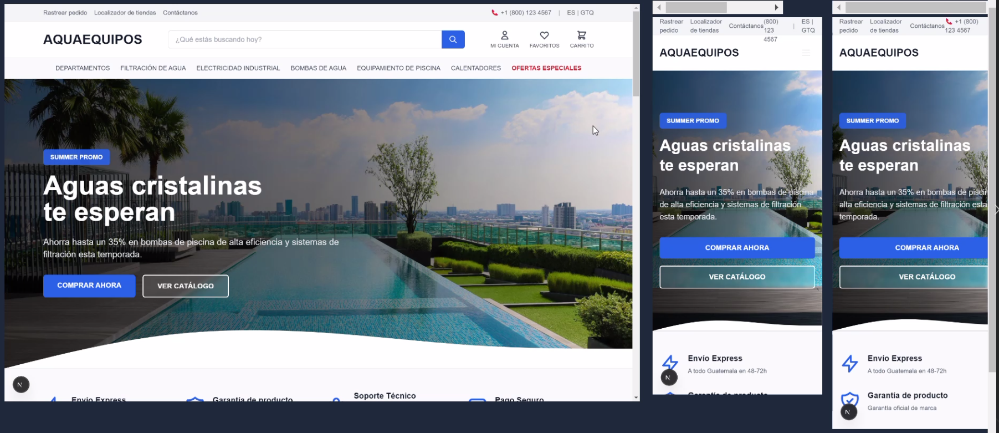
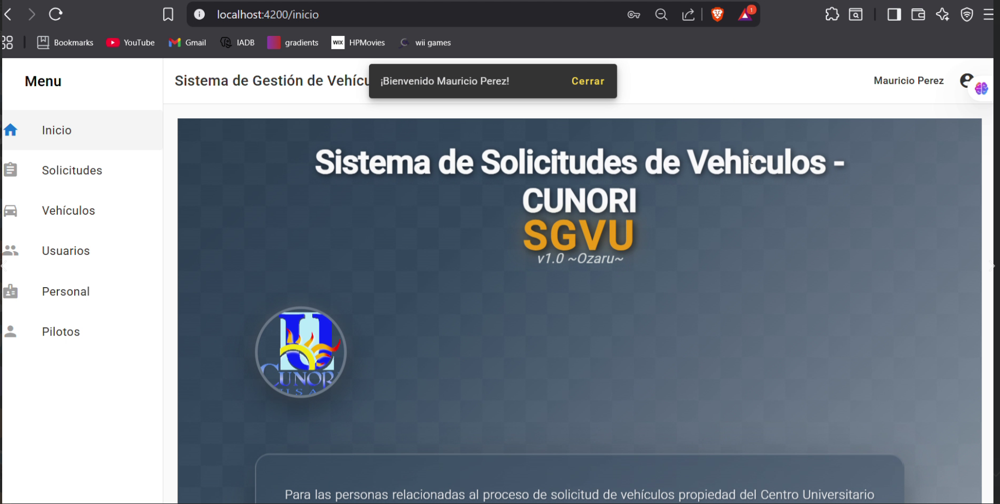
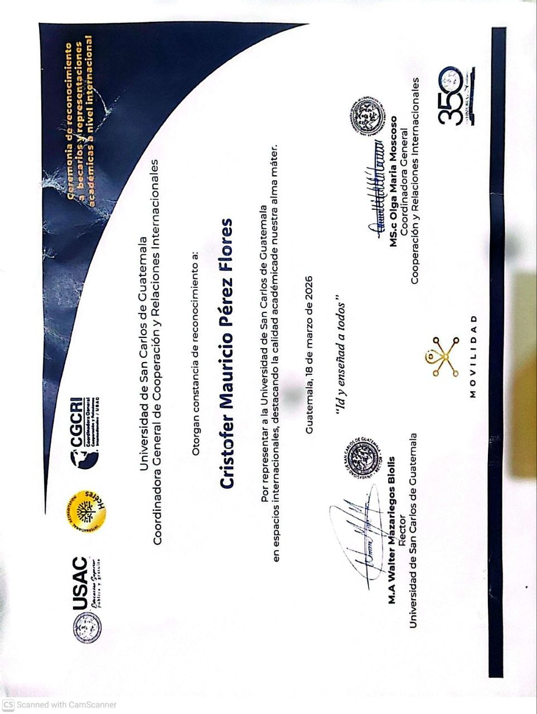
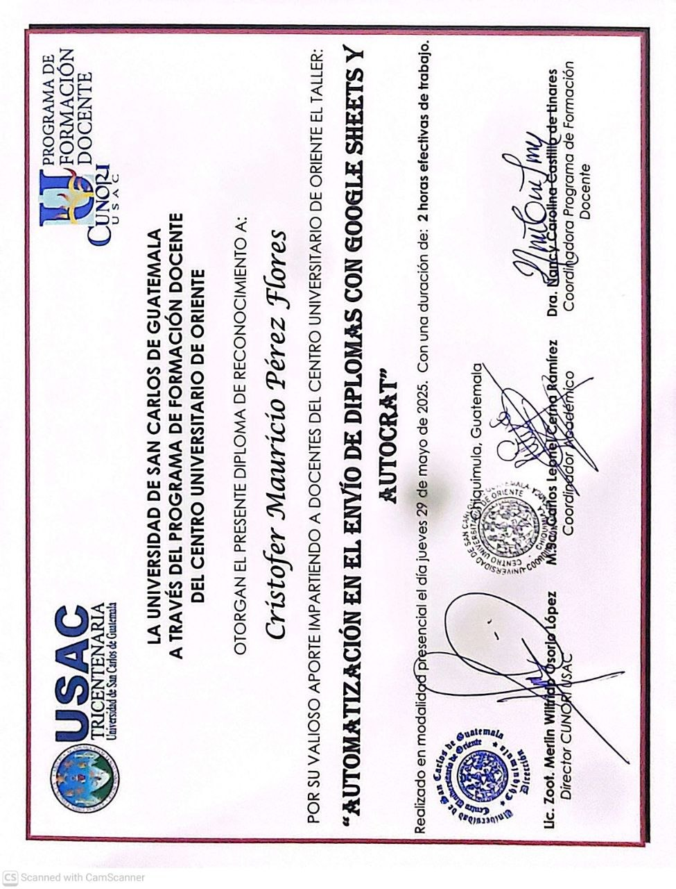
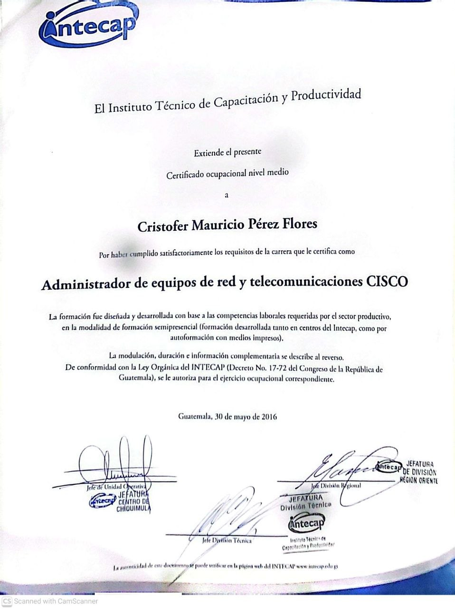
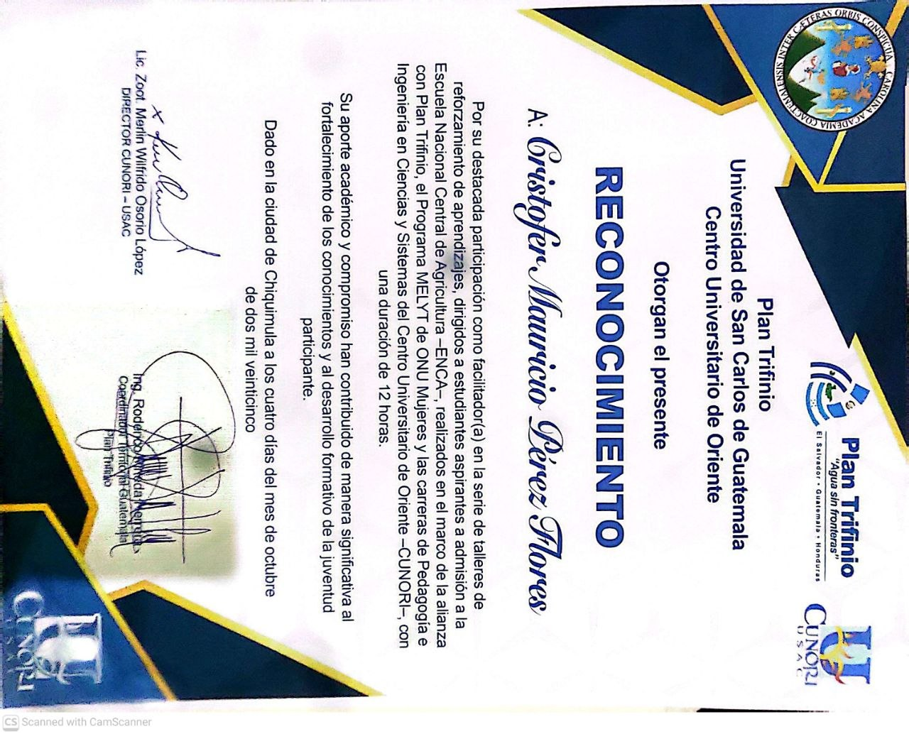
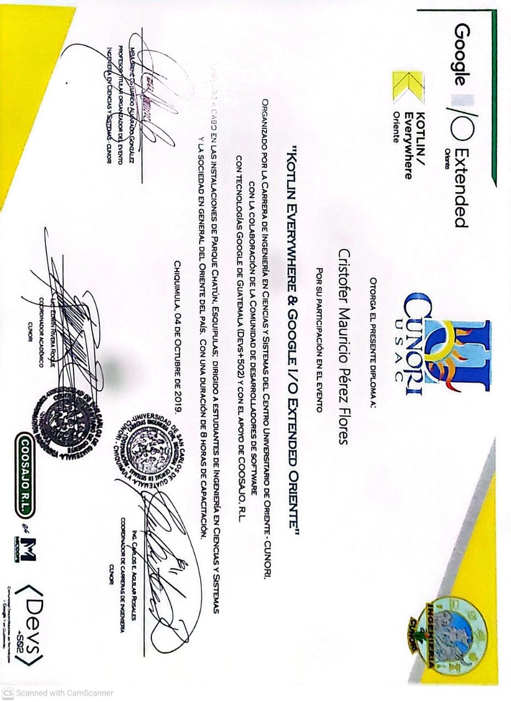

Hola, soy Cristófer
Desarrollo interfaces modernas con énfasis en experiencia y rendimiento.
Soy estudiante con cierre de pensum de Ingeniería en Sistemas Computacionales, apasionado por el desarrollo de soluciones tecnológicas con impacto real. A lo largo de mi formación he desarrollado proyectos personales y académicos. Me caracterizo por ser autodidacta, disciplinado y orientado a resultados. Busco constantemente aprender, colaborar y aplicar mis habilidades en entornos que valoren la innovación, la ética profesional y la mejora continua.
PROYECTOS DESTACADOS

Ecommerce Aqua Equipos
Plataforma de comercio electrónico desarrollada para Aqua Equipos, especializada en la venta de bombas de agua y productos relacionados. El sistema permite a los clientes explorar el catálogo completo, realizar pedidos y gestionar pagos de forma segura.
Desarrollé la solución completa desde cero, incluyendo backend, frontend y base de datos, implementando pasarelas de pago seguras y optimizando la experiencia de usuario para maximizar conversiones.

Sistema de Solicitud y Gestión de Vehículos CUNORI
Aplicación web colaborativa desarrollada junto a dos compañeros para gestionar solicitudes de vehículos propios de la universidad utilizados en viajes académicos, actividades administrativas y eventos especiales de la universidad.
RECONOCIMIENTOS Y LOGROS

Movilidad Académica Internacional
Este reconocimiento respalda mi participación y desempeño en entornos académicos de carácter internacional.
La distinción destaca mi capacidad para representar con excelencia a mi institución en espacios globales, aportando valor a través del conocimiento, la disciplina y una visión orientada a la colaboración internacional. Asimismo, refleja competencias clave como liderazgo, adaptabilidad y compromiso con estándares académicos de alto nivel.
Este logro forma parte de mi trayectoria en el ámbito académico y profesional, evidenciando mi interés en generar impacto más allá del entorno local, fortaleciendo redes de cooperación y contribuyendo activamente al intercambio de conocimientos a nivel internacional.

Facilitador de Taller de Automatización
Este diploma certifica mi participación como facilitador en el taller "Automatización en el envío de diplomas con Google Sheets y Autocrat".
La distinción reconoce mi aporte en la capacitación de docentes universitarios, donde compartí soluciones prácticas orientadas a la automatización de procesos académicos, optimizando la generación y distribución de documentos mediante herramientas digitales.
Este logro refleja mi capacidad para diseñar e implementar soluciones tecnológicas aplicadas a entornos educativos, así como mi habilidad para transferir conocimiento técnico de forma clara y efectiva. Además, evidencia mi enfoque en la eficiencia operativa, la innovación y la transformación digital dentro del ámbito académico.

Administrador de Equipos de Red y Telecomunicaciones CISCO
Este certificado acredita mi formación como Administrador de equipos de red y telecomunicaciones CISCO, validando competencias técnicas en la gestión, configuración y mantenimiento de infraestructuras de red.
Durante este proceso formativo adquirí conocimientos clave en redes, protocolos de comunicación, administración de dispositivos y resolución de problemas en entornos tecnológicos, alineados a las demandas del sector productivo. La formación, desarrollada bajo un enfoque práctico, fortaleció mi capacidad para implementar soluciones eficientes en conectividad y telecomunicaciones.
Este logro respalda mi base técnica en el área de redes, complementando mi perfil tecnológico y permitiéndome comprender y trabajar con infraestructuras que soportan sistemas digitales, automatizaciones y servicios en línea.

Facilitador en Talleres de Reforzamiento Académico
Este reconocimiento valida mi participación como facilitador en procesos de formación dirigidos a estudiantes aspirantes a educación superior.
Mi intervención se enfocó en el desarrollo de talleres de reforzamiento académico en áreas clave como matemática, física, lenguaje y química, contribuyendo a la preparación de los participantes para su ingreso a la vida universitaria. Este rol implicó no solo la transmisión de conocimientos, sino también la capacidad de estructurar contenidos, comunicar de forma efectiva y adaptarme a distintos niveles de aprendizaje.
Este logro refleja mi compromiso con la educación, la transferencia de conocimiento y el impacto social, así como mi habilidad para liderar procesos formativos que fortalecen las capacidades académicas de nuevos estudiantes.

Kotlin Everywhere & Google I/O Extended Oriente
Este diploma certifica mi participación en el evento "Kotlin Everywhere & Google I/O Extended Oriente", organizado en colaboración con comunidades de desarrolladores y el ecosistema tecnológico de Google.
Durante esta experiencia, fortalecí mis conocimientos en desarrollo de software moderno, especialmente en tecnologías relacionadas con Kotlin, así como en tendencias actuales presentadas en Google I/O. El evento me permitió profundizar en buenas prácticas de desarrollo, herramientas del ecosistema Google y enfoques innovadores aplicados a la creación de soluciones digitales.
Este logro refleja mi compromiso con el aprendizaje continuo y la actualización constante en tecnologías de desarrollo, consolidando una base sólida para la creación de aplicaciones y sistemas alineados a estándares actuales de la industria.
EXPERIENCIA LABORAL
Instructor de Electrónica
Impartí clases de electrónica a nivel técnico, desarrollando habilidades pedagógicas y capacidad para transmitir conocimientos técnicos complejos.
Facilitador de Taller Tecnológico
Facilitador de taller a docentes universitarios sobre la automatización del envío de diplomas con Google Sheets y Autocrat, promoviendo la transformación digital en procesos académicos.
Desarrollador Full Stack
Desarrollador del lado del backend, frontend y base de datos para proyectos creados desde cero, con enfoque en soluciones escalables y experiencia de usuario optimizada.
Contacto
Puedes incluir correo, LinkedIn o descargar CV.